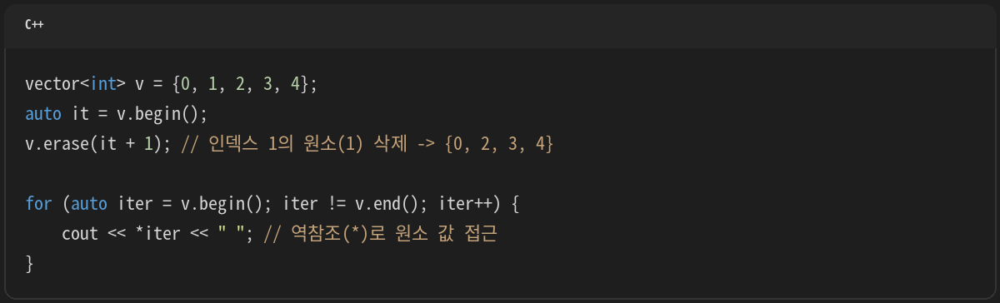
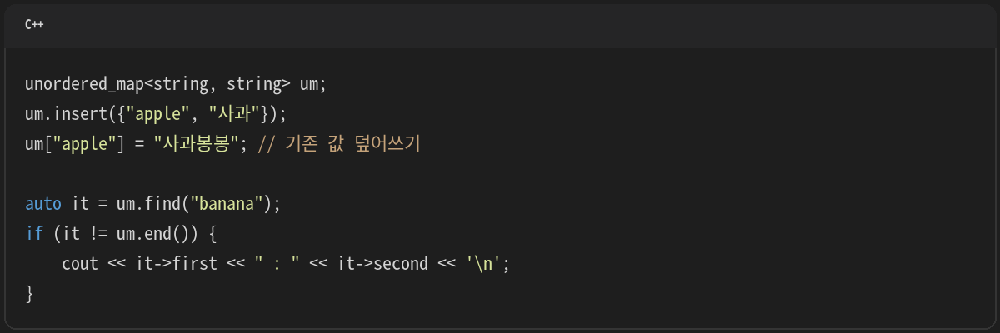

📦 C++ STL 핵심 정리 (컨테이너부터 반복자·해시테이블까지)
💡 한 줄 요약: C++ 표준 템플릿 라이브러리(STL)의 핵심 컨테이너(array,vector,stack,queue,deque,unordered_map)와iterator·auto의 동작 원리 및 ROS 2 실전 활용처를 정리한 핵심 노트
1. STL 개요 및 ROS 2 활용
- STL (Standard Template Library): 자주 사용하는 자료구조와 알고리즘을 미리 구현해 둔 C++ 표준 라이브러리로, 데이터를 담는 자료구조인 컨테이너(Container)가 가장 널리 활용됩니다.
- 주요 STL 컨테이너 요약:
std::array/std::vector: 크기가 고정된 정적 배열 / 크기가 가변적인 동적 배열std::stack/std::queue/std::deque: LIFO(후입선출) / FIFO(선입선출) / 양방향 삽입·삭제 큐std::priority_queue: 힙(Heap) 기반 우선순위 큐std::map/std::unordered_map: Key가 정렬된 트리(Red-Black Tree) / 순서가 없는 해시테이블(Hash Table) 기반 Key-Value 구조
- ROS 2에서 자주 쓰이는 STL 매핑:
| STL 요소 | ROS 2 주요 활용처 | 중요도 |
std::vector | 이동 지점 목록(Waypoints), 센서 값 목록, 파라미터 배열 | 필수 |
std::string | 노드·토픽 이름, 로그 출력 | 필수 |
std::shared_ptr | 노드, 발행자(Publisher), 메시지 객체 관리 | 필수 |
람다, std::function, std::bind | 콜백(Callback) 함수 등록 | 필수 |
std::chrono | 100ms, 1s 등 주기 및 시간 제어 | 필수 |
std::map, std::unordered_map | 여러 로봇을 이름(Key)으로 매핑하여 관리 | 보통 |
std::queue, std::deque | 목표(Goal) 대기열, 최근 $N$개 센서 데이터 버퍼 보관 | 보통 |
std::array, std::pair, <algorithm> | 고정 크기 메시지 배열, (x, y) 좌표 묶기, 정렬·탐색 | 쉬움 |
std::thread, std::mutex | 액션 서버(Action Server), 멀티스레드 Executor 동기화 | 심화 |
2. 정적 배열 (std::array)
- 특징:
<array>헤더를 사용하며, C 기본 배열과 달리 대입 연산(brr = arr)만으로 손쉽게 배열 전체를 복사할 수 있고.size()로 크기를 바로 얻을 수 있습니다. - 초기화 주의점:
array<int, 3> arr{};처럼 중괄호({})를 붙여야 모든 요소가0으로 초기화되며, 생략하면 쓰레기값이 채워집니다.
3. 동적 배열 (std::vector)과 반복자 (iterator)
- 동적 메모리 확장 원리:
<vector>헤더를 사용하며,vector<int> v(4);처럼 크기를 지정하면 기본값(0)으로 초기화됩니다. 내부적으로capacity만큼 공간을 확보해 두었다가 가득 차면 더 큰 메모리를 할당받아 기존 데이터를 복사한 뒤 이전 메모리를 해제(grow())합니다. - 주요 멤버 함수:
- 접근:
v[i](범위 검사 없이 빠름),v.at(i)(범위 초과 시out_of_range예외 발생),v.front(),v.back() - 추가·삭제:
v.push_back(x),v.pop_back(),v.insert(it, x),v.erase(it)(삭제 후 뒤 원소들을 앞으로 당김),v.clear()(모든 원소 삭제,capacity는 유지)
- 접근:
- 반복자(
iterator)와auto:iterator는 컨테이너 원소를 가리키는 포인터와 유사한 객체로,v.begin()(첫 원소)과v.end()(마지막 원소의 다음 위치)를 통해 순회 및 삽입·삭제 위치를 지정합니다.auto키워드를 사용하면 컴파일러가 초기화식으로부터 타입을 자동 추론하므로vector<int>::iterator it = v.begin();을auto it = v.begin();으로 간결하게 작성할 수 있습니다.
C++

C++ 코드
4. 스택, 큐, 덱 (stack, queue, deque)
| 컨테이너 | 구조 및 원리 | 주요 함수 | 내부 동작 특징 |
std::stack | LIFO (후입선출) | push(), pop(), top(), empty(), size() | 동적 배열(vector)의 끝에서만 삽입·삭제하는 형태 |
std::queue | FIFO (선입선출) | push(), pop(), front(), empty(), size() | deque에서 push_front()와 pop_back()을 제한한 형태 |
std::deque | Double-Ended Queue (양방향) | push_front(), push_back(), pop_front(), pop_back(), front(), back() | 앞뒤 양쪽에서 삽입·삭제가 가능한 원형 큐(Circular Queue) 구조 |
5. 해시테이블 (std::unordered_map)
- 구조:
<unordered_map>헤더를 사용하며, 순서가 없는 Key-Value 쌍을 저장하는 해시테이블(배열 + 연결리스트 체이닝 구조)입니다. - 삽입 및 접근 시 핵심 주의사항:
um.insert({key, value}): 이미 동일한key가 존재하면 새 값을 무시합니다.um[key] = value: 이미key가 존재하면 새 값으로 덮어씁니다.um[key]조회 위험성: 존재하지 않는key를[]로 조회하면 기본값(int는0,string은"")을 가진 원소가 자동으로 새로 삽입됩니다.um.at(key): 존재하지 않는key에 접근하면 에러(예외)를 발생시킵니다.
- 안전한 탐색과 순회:
- 조회 전에는 반드시
um.find(key)를 호출해 반환된 반복자가um.end()가 아닌지 확인한 뒤it->first(Key),it->second(Value)로 접근해야 합니다. - 해시테이블 특성상 데이터가 정렬되어 있지 않으므로 전체 요소를 반복문으로 순회하는 용도로는 비효율적입니다.
- 조회 전에는 반드시
C++

C++ 코드